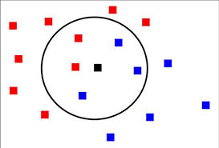
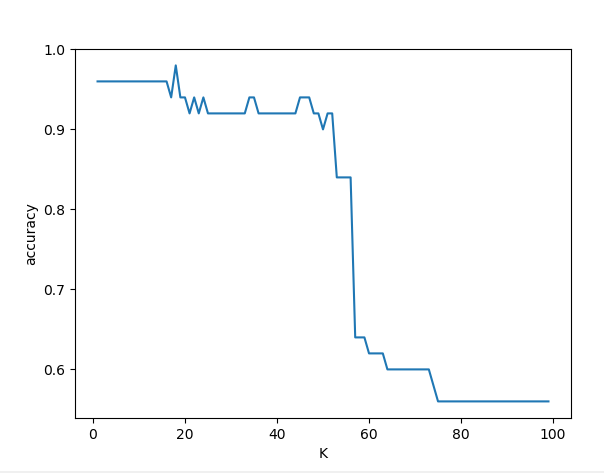

K-Nearest Neighbors (KNN) menggunakan scikit-learn pada dataset iris.¶
KNN (k- nearest neighbors) adalah algoritma yang berfungsi untuk melakukan klasifikasi suatu data berdasarkan data pembelajaran (train data sets), yang diambil dari k tetangga terdekatnya (nearest neighbors). Dengan k merupakan banyaknya tetangga terdekat.
kelebihan dan kekurangan Knn¶
kelebihan¶
- lebih efektif di data training yang besar
- dapat menghasilkan data yang lebih akurat
kekurangan¶
- KNN perlu menentukan nilai dari parameter K (jumlah dari tetangga terdekat)
- Pembelajaran berdasarkan jarak tidak jelas mengenai jenis jarak apa yang harus digunakan dan atribut mana yang harus digunakan untuk mendapatkan hasil yang terbaik
- Biaya komputasi cukup tinggi karena diperlukan perhitungan jarak dari tiap sample uji pada keseluruhan sample latih
Cara Kerja Algoritma K-Nearest Neighbors (KNN)¶
K-nearest neighbors melakukan klasifikasi dengan proyeksi data pembelajaran pada ruang berdimensi banyak. Ruang ini dibagi menjadi bagian-bagian yang merepresentasikan kriteria data pembelajaran. Setiap data pembelajaran direpresentasikan menjadi titik-titik c pada ruang dimensi banyak.

-
Klasifikasi Terdekat (Nearest Neighbor Classification)¶
Data baru yang diklasifikasikan selanjutnya diproyeksikan pada ruang dimensi banyak yang telah memuat titik-titik c data pembelajaran. Proses klasifikasikan dilakukan dengan mencari tentangga terdekat dari c-baru(nearest neighbor). Teknik pencarian tetangga terdekat yang umum dilakukan dengan menggunakan formula jarak euclidean.
-
Banyaknya k Tetangga Terdekat¶
Untuk menggunakan algoritma k nearest neighbors, perlu ditentukan banyaknya k tetangga terdekat yang digunakan untuk melakukan klasifikasi data baru. banyaknya k, sebaiknya merupakan angka ganjil, misalnya k= 1, 2, 3 dan seterusnya. Penentuan nilai k dipertimbangkan berdasarkan banyakanya data yang ada dan ukuran dimensi yang dibentuk oleh data. Semakin banyak data yang ada, angka k yang dipilih sebaiknya semakin rendah. Namun, semakin besar ukuran dimensi data, angka k yang dipilih sebaiknya semakin tinggi.
-
Algoritma K-Nearest Neighbors¶
a. Tentukan k bilangan bulat positif berdasarkan ketersediaan data pembelajaran.
b. pilih tetngga terdekat dari data baru sebanyak k.
c. tentukan klasifikasi paling umum pada langakah (ii), dengan menggunakan frekuensi terbanyak.
d. keluaran klasifikasi dari data sampel baru
Langkah 1 : Impor data yang diperlukan dan periksa fitur-fiturnya.
impor dataset muat data iris dan periksa fitur-fiturnya
from sklearn import datasetsiris=datasets.load_iris()print(iris.data)
print(iris.target)Setiap pengamatan mewakili satu bunga dan 4 kolom mewakili 4 pengukuran. Kita dapat melihat fitur (ukuran) di bawah atribut 'data', di mana data tersebut adalah sepal length, sepal width, petal length dan petal width.
Langkah 2 : membagi data dan melatih model
Dalam pembagian data iris tersebut, kita dapat membagi data menjadi dua bagian diantaranya data training dan data testing. kita menggunakan fungsi train_test_split untuk membagi data tersebut. Dan kita akan melatih dan menguji pada set data yang berbeda, akurasi pengujian yang dihasilkan akan menjadi perkiraan yang lebih baik tentang seberapa baik model tersebut akan tampil pada data yang tidak terlihat.
from sklearn.model_selection import train_test_split
x_train, x_test, y_train, y_test=train_test_split(iris.data,iris.target,test_size=0.33)kemudian kita impor kelas KNeighborsClassifer dari modul tetangga yang digunakan untuk memperkirakan jumlah yang tidak diketahui. Selanjutnya kita telah membuat objek yang disebut dengan knn yang telah mengetahui bagaimana melakukan klasifikasi KNN setelah kami memberikan data. Parameter 'n_neighbors' adalah parameter hiper (k). Semua parameter lain diatur ke nilai default.
kemudian kita impor matplotlib dan numpy. matplotlib digunakan untuk membantu memvisualisasikan data dengan indah dan rapi sehingga kita dapat menampilkan data yang telah kita olah sesuai dengan kebutuhan, karena Matplotlib adalah library paling banyak digunakan oleh data science untuk menyajikan datanya ke dalam visual yang lebih baik. begitu juga dengan numpy memiliki kegunaan untuk operasi vektor dan matriks
Metode 'fit' digunakan untuk melatih model tentang data pelatihan (X_train, y_train) dan metode 'predict' untuk melakukan pengujian pada data pengujian (X_test). Memilih nilai optimal K sangat penting, jadi kami menyesuaikan dan menguji model untuk nilai yang berbeda untuk K menggunakan loop untuk mencatat akurasi pengujian KNN dalam sebuah variabel.
from sklearn.neighbors import KNeighborsClassifier
clf=KNeighborsClassifier(n_neighbors=3).fit(x_train,y_train)
from sklearn.metrics import accuracy_score
print("accuracy is ")
print(accuracy_score(y_test,clf.predict(x_test)))
import matplotlib.pyplot as plt
accuracy_values=[]
for x in range(1,x_train.shape[0]):
clf=KNeighborsClassifier(n_neighbors=x).fit(x_train,y_train)
accuracy=accuracy_score(y_test,clf.predict(x_test))
accuracy_values.append([x,accuracy])
pass
import numpy as np
accuracy_values=np.array(accuracy_values)Plot hubungan antara nilai-nilai K dan akurasi pengujian yang sesuai menggunakan perpustakaan matplotlib. Seperti yang dapat kita lihat ada peningkatan dan penurunan akurasi dan itu cukup khas ketika memeriksa kompleksitas model dengan akurasi. Secara umum sebagai nilai K meningkat tampaknya ada peningkatan dalam keakuratan dan sekali lagi jatuh.
Secara umum akurasi Pelatihan meningkat seiring dengan meningkatnya kompleksitas model, untuk KNN kompleksitas model ditentukan oleh nilai K. Nilai K yang lebih besar mengarah ke batas keputusan yang lebih halus (model yang kurang kompleks). K yang lebih kecil mengarah ke model yang lebih kompleks (dapat menyebabkan overfitting). Akurasi pengujian menghukum model yang terlalu kompleks (over fitting) atau tidak cukup kompleks (underfit). Kita mendapatkan akurasi pengujian maksimum ketika model memiliki tingkat kompleksitas yang tepat, dengan itu kita dapat melihat bahwa untuk akurasi model kami adalah 0.96%.
plt.plot(accuracy_values[:,0],accuracy_values[:,1])
plt.xlabel("K")
plt.ylabel("accuracy")
plt.show()

Refrensi :